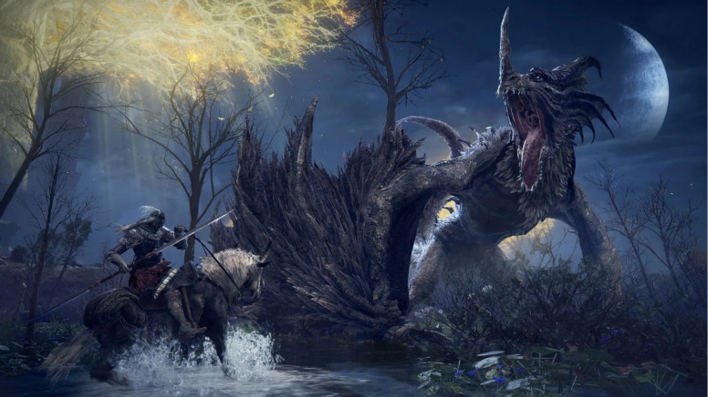
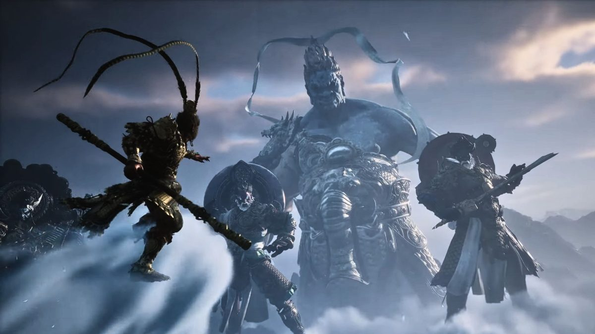
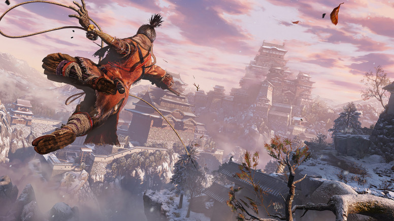
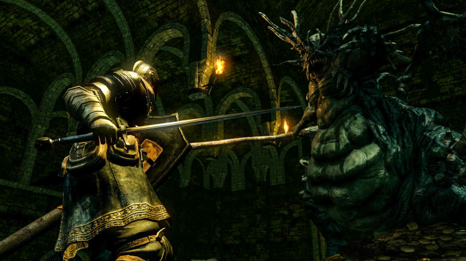
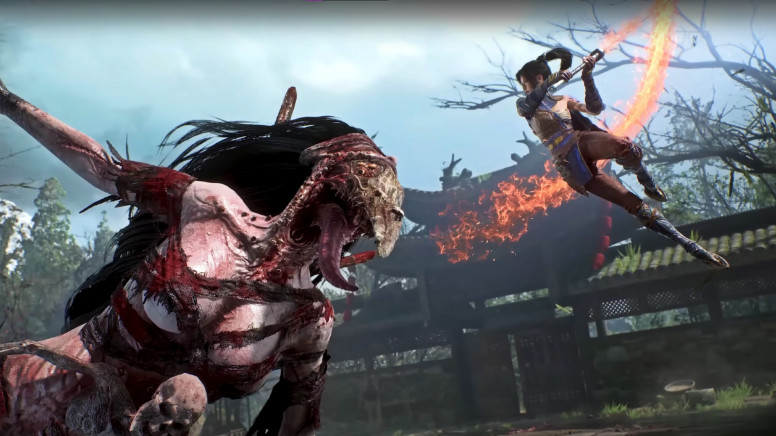

1. Elden Ring

Que melhor maneira de começar uma lista dos melhores jogos estilo Souls do que com o Soulslike definitivo de todos os tempos?
Depois de uma década inteira de desenvolvedores tentando capturar a mesma magia que a FromSoftware criou e consagrou, o estúdio finalmente conseguiu .
Elden Ring é uma obra-prima que pega os princípios que definem a série Souls e os leva ao limite em um mundo aberto impressionante.
Se por acaso você ainda não jogou a obra-prima da FromSoftware, essa é a melhor maneira de experimentar um jogo do gênero Soulslike pela primeira vez.
Enquanto a linearidade de Dark Souls exige que você se lance contra um chefe até derrotá-lo, Elden Ring lhe dá a liberdade de montar em seu fiel corcel, Torrent, e explorar o horizonte em busca de um novo desafio — desta vez, com sorte, mais sorte.
No entanto, Elden Ring oferece muito mais do que apenas chefes . Uma história complexa, diversas opções de construção de personagens e segredos sobre segredos incentivam múltiplas jogadas. E nem vamos falar dos pisos invisíveis.
Do enorme elevador que desce até o subterrâneo, porém estrelado, Rio Siofra, à vasta paisagem de Liurnia dos Lagos, logo após o Castelo de Ventobravo, é fácil se perder apenas explorando.
Isso sem falar das diversas missões nas quais você pode se envolver ao longo do caminho.
Recupere uma agulha de costura para um alfaiate meio-humano, ajude uma garota cega a enxergar a luz com uma coleção de globos oculares viscosos e aceite um convite para uma mansão habitada por assassinos e blasfemos.
Para citar a análise de Elden Ring feita por Jordan Forward , o jogo "ridiculariza palavras como 'épico' e 'incrível'".
2. Black Myth: Wukong

Black Myth: Wukong se situa na tênue linha que separa os jogos do gênero Soulslike dos jogos de ação, então sua inclusão nesta lista é um tanto controversa.
No entanto, não há dúvidas de que esta adaptação estelar de Jornada ao Oeste emprega tudo o que amamos em um bom Soulslike — e discretamente omite tudo o que não gostamos.
Como um humilde homem-macaco seguindo os passos do mítico Sun Wukong, você deve superar as adversidades com sua astúcia, uma constituição robusta e uma pitada de magia.
Os chefes Wukong são um espetáculo repleto de adrenalina, saído diretamente do folclore chinês, e não se rendem facilmente.
Em sua análise de Black Myth: Wukong , Nat Smith o chama de "um forte candidato a Jogo do Ano de proporções épicas" que "busca expandir o legado da FromSoftware em vez de usá-lo como muleta".
Enquanto outros jogos do gênero Souls priorizam a defesa com aparo, o combate de Wukong se apoia na natureza simiesca do Escolhido, com esquivas perfeitas.
Seu sistema de posturas lembra bastante o de Nioh, permitindo que você use seu fiel bastão para atacar à distância, com velocidade e até mesmo verticalmente.
Pode ter parecido bom demais para ser verdade na época, mas este RPG de ação de estreia da Game Science saiu da obscuridade para se tornar um dos melhores jogos para PC dos últimos anos.
E ainda vai ganhar uma sequência.
3. Sekiro: Shadows Die Twice

Enquanto Dark Souls deu origem ao gênero e Elden Ring o expandiu para um mundo aberto, Sekiro: Shadows Die Twice é um soulslike focado em ação que antecede Wukong.
Claro, há chefes, fogueiras e áreas interconectadas em abundância, mas sua mecânica de construção de personagem simplificada e o protagonista com nome próprio o diferenciam de tudo que veio antes.
Em vez da clássica esquiva, Sekiro incorpora barras de postura que podem ser reduzidas com uma série de desvios bem-sucedidos para desferir um golpe fatal poderoso.
Some a isso as inúmeras ferramentas acopladas ao braço protético de Sekiro — um gancho, um escudo em forma de guarda-chuva e um lança-chamas — e você terá um jogo no estilo Souls com uma jogabilidade bem diferente do restante da obra da FromSoftware.
O que permanece igual? Além da capacidade de Sekiro, às vezes, reviver após a derrota, você ainda coleta "almas" na forma de pontos de habilidade que podem ser gastos em certas árvores de habilidades, e até mesmo perde o progresso para o próximo ponto de habilidade ao morrer.
Você também explora um vasto mundo repleto de inimigos formidáveis, em um Japão inspirado tanto na mitologia quanto na história.
Nas palavras de Richard Scott-Jones em sua análise de Sekiro: Shadows Die Twice : "Foi um privilégio jogar Sekiro."
4. Dark Souls Remasterizado

Seria um crime omitir Dark Souls de uma lista dos melhores jogos do gênero Soulslike, justamente porque tecnicamente ele não é um Soulslike.
Dark Souls não é "parecido" com Souls, ele é Souls.
Desde seus primeiros passos hesitantes para fora da cela no Asilo Demoníaco como o Escolhido dos Mortos-Vivos, o jogo seminal da FromSoftware, um clássico do gênero, é uma fonte inesgotável de momentos inesquecíveis que fazem parte do cânone dos videogames.
"Comparado aos seus sucessores, parece lento e denso", diz Richard-Scott Jones em sua análise de Dark Souls Remastered . br"É exatamente o que os puristas da série querem ouvir." Ele está certo.
Embora o consenso seja de que Dark Souls 3 é o melhor da trilogia, há algo a se dizer sobre voltar às raízes e mergulhar no mundo singular do original, antes das iterações, do aprimoramento e do prestígio que se seguiram.
Dark Souls Remastered é, de longe, a melhor maneira de jogar pela primeira vez, especialmente no PC.
Não só é impossível encontrar a versão original na maioria das lojas, como os fãs veteranos se lembrarão bem dos problemas de desempenho que só podiam ser resolvidos pelo aclamado mod DSFix.
Dark Souls Remastered corrige todos esses problemas, além de oferecer melhorias visuais e de taxa de quadros, e ainda inclui o DLC Artorias of the Abyss.
Não ouse se tornar um Hollow!
3. Wuchang: Fallen Feathers

Wuchang: Fallen Feathers é mais um jogo no estilo Souls que se inspira na história e cultura chinesas.
Desta vez, assumimos o papel da personagem-título, Wuchang, em uma jornada pela antiga região de Shu, assolada pela peste, em busca de sua irmã.
Todos os elementos característicos do design de níveis interconectados da FromSoftware estão presentes, com algumas mudanças bem-vindas na fórmula já consagrada.
A análise de Nat Smith sobre Wuchang: Fallen Feathers conclui que o jogo "supera todas as expectativas" como um soulslike que "não se contenta com uma pálida imitação da FromSoftware".
O combate deixa de lado a barra de estamina em favor de um sistema de magia tão essencial quanto as armas de combate corpo a corpo, e você tem total liberdade para redefinir seus pontos de habilidade sempre que quiser.
No entanto, a joia da coroa de Wuchang é o Demônio Interior, um fantasma clone que ameaça os jogadores que morrem com muita frequência.
Em Dark Souls, isso seria uma punição. Em Wuchang, é uma oportunidade para purificar sua loucura e recuperar o dinheiro perdido.
É verdade que Wuchang não está isento de problemas.
Inúmeros problemas de desempenho tornaram sua busca por aclamação da crítica uma batalha árdua, e um patch de censura causou certo descontentamento.
No entanto, uma série de patches emergenciais pós-lançamento já trouxe algumas soluções, e esperamos que Leenzee continue a levar em consideração o feedback da comunidade no futuro próximo.
Enquanto isso, as melhores configurações de Wuchang Fallen Feathers podem atenuar os problemas de desempenho mais graves.